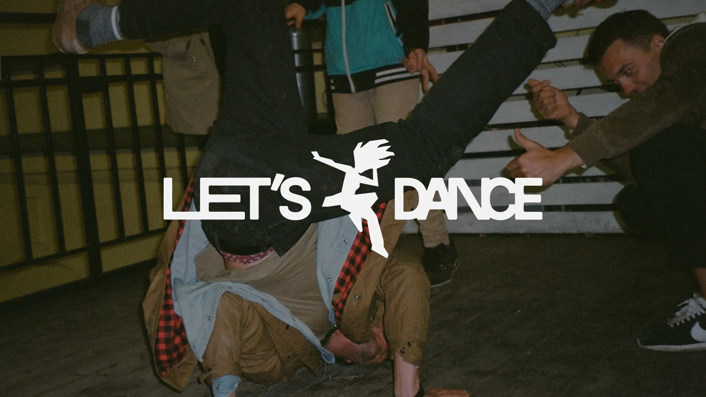
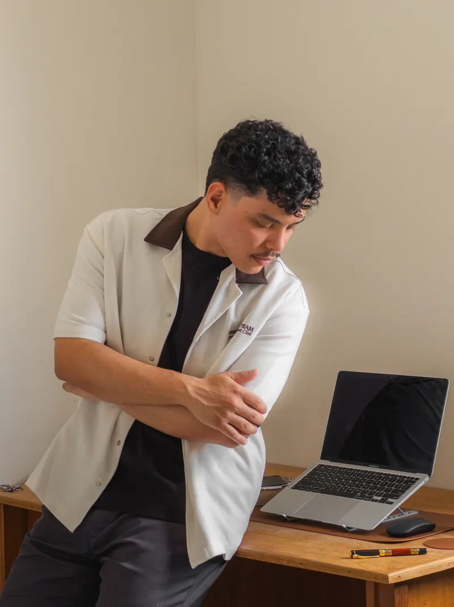

Let’s Dance
Estratégia de marca | Identidade visual
Designer & Estrategista de marca em São José dos Campos/SP.
Prazer, sou designer gráfico e estrategista de marcas autorais em São José dos Campos.
Estou aqui para elevar a percepção de valor do seu negócio.

Faço isso através de um processo documentado etapa por etapa, com criatividade e design.
Trabalho com negócios autorais, feitos por quem trata o produto como ofício. Você pode contratar os serviços separadamente, conforme o momento do seu negócio, ou reunir todos em um projeto completo de construção de marca.
O fundamento para marcas que não querem ser apenas mais uma na multidão. Mergulho na essência do seu negócio e defino posicionamento, público, diferenciais e território de atuação.
Conversar sobre este serviçoDou palavras à estratégia. Defino como a marca se chama, o que ela defende e como ela fala: naming, manifesto, voz e tom, slogan e frases.
Conversar sobre este serviçoDou forma à estratégia. Um sistema visual e um brandbook que mantêm tudo coerente: logotipo e variações, cores, tipografia, ilustrações, fotografia e aplicações.
Conversar sobre este serviçoA marca aplicada onde o cliente encontra o seu negócio. Levo a identidade para as peças do dia a dia, mantendo a mesma voz e a mesma forma em cada uma delas.
Conversar sobre este serviço
Estratégia de marca | Identidade visual
Estratégia de marca | Identidade verbal | Identidade visual

Identidade visual | Projeto conceitual
Conte sobre o seu negócio e o momento dele. A mensagem chega direto no meu WhatsApp.